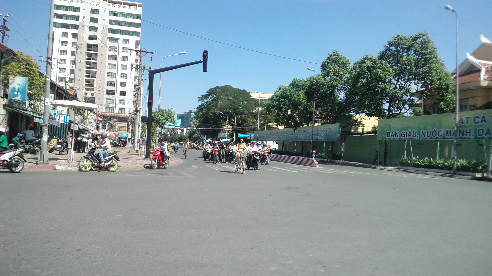

雨草の庭
Engineering & Nature Notes
Notes
Photography
Profile
Links
Photography

全ての写真を見る →
Profile
Favorite Hobbies
My Hobbiesへ →
LinkedIn Profile
Links
Favorite Web Links
お気に入りリンク集へ →
BBS by blogger.com
Favorite Web Linksへ →